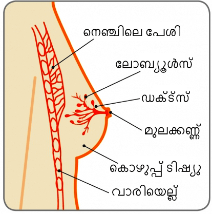
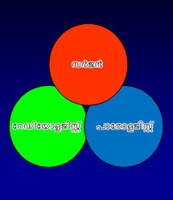
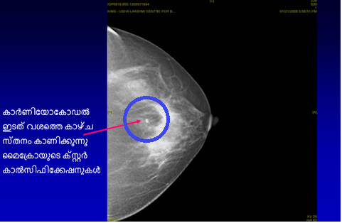
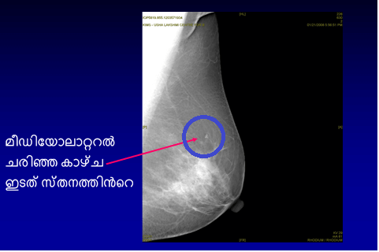

മുലക്കണ്ണ്

സ്തനം

മുലക്കണ്ണ്
സ്പോര്ട്സ് ഇതിഹാസവും, ഒമ്പത് തവണ വിംബിള്ഡണ് ചാംപ്യനുമായ മാര്ട്ടിന നവ്രതിലോവക്ക് ഡക്റ്റല് കാര്സിനോമ ഇന് സിറ്റു(ഡിസിഐഎസ്) എന്ന സ്തനാര്ബുദത്തിന്റെ ഒരു പ്രാരംഭരൂപം കണ്ടെത്തി. അവര്ക്ക് 53 വയസ്സായിരുന്നു. നാല് വര്ഷമായി അവര് വാര്ഷിക സ്ക്രീനിങ്ങ് മാമ്മോഗ്രാം ചെയ്തിരുന്നില്ല. 40 വയസ്സു മുതല് വാര്ഷിക സ്ക്രീനിങ്ങ് മാമ്മോഗ്രാമുകള് ചെയ്യണമെന്ന് അവരോട് നിര്ദ്ദേശിച്ചിരുന്നു. അവരുടെ ആരോഗ്യകരമായ ജീവിതശൈലിയും, സ്ഥിതിയും വാര്ഷിക ചെക്കപ്പുകള് ചെയ്യുന്നതില് ചില വിട്ടുവീഴ്ചകള്ക്ക് ഇടയാക്കി.
"“നാലു വര്ഷങ്ങള് ഞാന് മാമ്മോഗ്രാമുകള്ക്കിടയിലൂടെ കടന്നുപോയി”, അവര് ഒരു അഭിമുഖത്തില് പറഞ്ഞു. “ഞാന് അതില് നിന്ന് ഒഴിഞ്ഞുമാറി. എല്ലാവരും തിരക്കിലായിരിക്കും, പക്ഷേ ഒഴിവുകഴിവുകള് പറയരുത്. ഞാന് ആകാരവടിവ് നിലനിര്ത്തുകയും, ശരിയായി ഭക്ഷണം കഴിക്കുകയും ചെയ്തിട്ടും എനിക്ക് ഇത് സംഭവിച്ചു. മറ്റൊരു വര്ഷം ഞാന് വലിയൊരു പ്രശ്നത്തിലായേക്കാം.” ഭാഗ്യവശാല് ക്യാന്സര് അതിന്റെ ആദ്യ ഘട്ടത്തില് കണ്ടെത്തിയിരുന്നു. അവര് ഇതിനകം ലംപെക്ടമിക്ക് വിധേയയാവുകയും മെയ് മാസത്തില് ആറാഴ്ചത്തെ റേഡിയേഷന് തെറാപ്പി ആരംഭിക്കുകയും ചെയ്തു. ഡോക്ടര്മാര് പറഞ്ഞത് രോഗത്തെ സംബന്ധിച്ച അവരുടെ മുന്നറിവ് മികച്ചതായിരുന്നു എന്നാണ്.
ഒരു പ്രശസ്ത ഗായികയും ഒമ്പത് തവണ ഗ്രാമി അവാര്ഡ് ജേതാവുമായ ഷെറില് ക്രോയും, മറ്റൊരു ഹോളിവുഡ് നടിയായ ക്രിസ്റ്റിന് അപ്ലെഗേറ്റും സ്ക്രീനിങ്ങ് മാമ്മോഗ്രാം വഴി സൂക്ഷ്മമായ സ്തനാര്ബുദം കണ്ടെത്തി.
എന്താണ് ഡിസിഐഎസ്?
സ്തനം നിര്മ്മിക്കപ്പെട്ടിരിക്കുന്നത് ധമനികളും, ലോബ്യൂളുകളും, കൊഴുപ്പ് കോശങ്ങളും വഴിയാണ്. ഡക്ടല് കാര്സിനോമ ഇന് സിറ്റു(ഡിസിഐഎസ്) സ്തനാര്ബുദത്തിന്റെ ഒരു പ്രാരംഭ രൂപമാണ്. ഇതില് ക്യാന്സര് കോശങ്ങള് ധമനിക്കുള്ളിലായിരിക്കും (പാല് മുലക്കണ്ണിലേക്ക് എത്തിക്കുന്നതിന്). മുലപ്പാലിന്റെ ധമനികളില് നിന്ന് സ്തനകോശങ്ങളുടെ ചുറ്റുപാടുകളിലേക്ക് ക്യാന്സര് കോശങ്ങള് വികസിക്കാത്ത ക്യാന്സറിന് മുമ്പുള്ള അവസ്ഥയാണിത്.
ഡിസിഐസ് എത്രത്തോളം സാധാരണമാണ്?
അമേരിക്കന് ക്യാന്സര് സൊസൈറ്റിയുടെ അഭിപ്രായത്തില് അമേരിക്കയില് ഓരോ വര്ഷവും ഡിസിഐഎസിന്റെ 60,000 ഓളം കേസുകള് നിര്ണ്ണയിക്കപ്പെടുന്നു (ഓരോ വര്ഷവും സ്തനാര്ബുദം കണ്ടെത്തുന്ന 5 പുതിയ കേസുകളില് 1 ). ഇന്ത്യയില് ഇന്ത്യന് കൗണ്സില് ഓഫ് മെഡിക്കല് റിസര്ച്ചിന്റെ (ഐസിഎംആര്) അഭിപ്രായപ്രകാരം ഏകദേശം 150,000 സ്തനാര്ബുദത്തിന്റെ പുതിയ കേസുകള് ഓരോ വര്ഷവും കണ്ടെത്തപ്പെടുന്നു. എന്നിരുന്നാലും ഡിസിഐഎസ് ബാധിക്കുന്നത് സംബന്ധിച്ച കൃത്യമായ സ്ഥിതിവിവര കണക്കുകള് ലഭ്യമല്ല. ബോധവത്കരണത്തിന്റെയും സംഘടിതമായ സ്ക്രീനിങ്ങ് പ്രോഗ്രാമിന്റെയും അസാന്നിധ്യം മൂലം നമ്മുടെ രാജ്യത്തെ 60% സ്തനാര്ബുദങ്ങള് വര്ദ്ധിച്ച അവസ്ഥയിലാണ് ഉള്ളത്. മിക്കവയും രോഗം കണ്ടെത്തി ഒരു വര്ഷത്തിനകം അതിന് കീഴ്പ്പെടും. ഇന്ത്യയില് ഓരോ 10 മിനിറ്റിലും ഒരു സ്ത്രീ സ്തനാര്ബുദത്തിന് കീഴ്പ്പെടുന്നു.
എങ്ങനെയാണ് ഡിസിഐഎസ് പ്രത്യക്ഷമാകുന്നത്?
ഡിസിഐഎസ് സാധാരണയായി ഏതെങ്കിലും ലക്ഷണത്തോടെയല്ല രംഗത്ത് വരുക. ഡിസിഐഎസില് ഏറിയ പങ്കും(80% ല് അധികം)സ്ക്രീനിങ്ങ് മാമ്മോഗ്രാഫിയില് കണ്ടെത്തിയതാണ്. ഡിസിഐഎസ് മുലക്കണ്ണില് നിന്ന് രക്തം കലര്ന്ന സ്രവത്തോടെ, മുലക്കണ്ണിന് ചുറ്റും തിണര്പ്പായി (പേജെറ്റ്സ് ഡിസീസ് എന്ന് വിളിക്കുന്നു) അല്ലെങ്കില് വളരെ അപൂര്വ്വമായി സ്തനത്തിലെ ഒരു മുഴയായി കാണപ്പെടാം.
എങ്ങനെയാണ് ഡിസിഐഎസ് നിര്ണ്ണയിക്കുന്നത്?
ഡിസിഐഎസ് പതിവായുള്ള ബ്രെസ്റ്റ് സ്ക്രീനിങ്ങ് അസസ്മെന്റില് കണ്ടെത്താം. ഇതില് ഒരു സ്പെഷ്യലിസ്റ്റ് നടത്തുന്ന ക്ലിനിക്കല് സ്തന പരിശോധന, ബ്രെസ്റ്റ് ഇമേജിങ്ങ് (രണ്ട് സ്തനങ്ങളുടെയും മാമ്മോഗ്രാം,സ്തനത്തിന്റെ അള്ട്രാസൗണ്ട്), നീഡില് കോര് ബയോപ്സി (ട്രിപ്പിള് അസസ്മെന്റ്) എന്നിവ ഉള്പ്പെടുന്നു.

ഡിസിഐഎസ് വളരെ അപൂര്വ്വമായേ ഒരു മുഴയായി കാണപ്പെടുകയുള്ളൂ. ക്ലിനിക്കല് സ്തന പരിശോധന ശരിക്കും പറഞ്ഞാല് സഹായകരമല്ല. മാമ്മോഗ്രാമാണ് ബ്രെസ്റ്റ് സ്ക്രീനിങ്ങിനുള്ള ഗോള്ഡ് സ്റ്റാന്ഡേര്ഡ്. ഇത് പൊതുവെ സാധാരണമല്ലാത്ത മൈക്രോകാല്സിഫിക്കേഷന്റെ ഒരു കൂട്ടമായി (പ്ലിയോമോര്ഫിക്) കാണപ്പെടും - അതായത് മാമ്മോഗ്രാമില് വെളുത്ത കുത്തുകളായി കാണപ്പെടുന്ന കാല്സ്യത്തിന്റെ സൂക്ഷ്മമായ കണങ്ങള്. എന്നിരുന്നാലും എല്ലാ മൈക്രോകാല്സിഫിക്കേഷനുകളും ക്യാന്സര് അല്ല എന്ന കാര്യം ഓര്മ്മിക്കേണ്ടതാണ്. ഡിസിഐഎസ് കണ്ടെത്തുന്നതിന് ഒരു മള്ട്ടിഡിസിപ്ലിനറി ടീമിന്റെ കഴിവും ശുഷ്കാന്തിയും ആവശ്യമാണ്.



അന്തിമമായി, ഒരു രോഗനിര്ണ്ണയം നടത്തുന്നതിന് കോര് നീഡില് ബയോപ്സി വഴി കോശത്തിന്റെ ഒരു ഭാഗം നീക്കം ചെയ്യും. ലോക്കല് അനസ്തേഷ്യ നല്കി, സ്റ്റീരിയോടാക്ടിക് മാര്ഗ്ഗ നിര്ദ്ദേശത്തിലാണ് (മാമ്മോഗ്രാമിന്റെ സഹായത്തോടെ)ഇത് ചെയ്യുക. മറ്റൊരു തരം നീഡില് ബയോപ്സിയായ ഫൈന് നീഡില് ആസ്പിരേഷന് ബയോപ്സി(എഫ്എന്എസി) പ്രത്യക്ഷമായ സ്തനത്തിലെ മുഴകളിലാണ് ഉപയോഗിക്കുന്നത്. ഇത് തെറ്റിദ്ധാരണയുണ്ടാക്കുകയും ഡിസിഐഎസില് നിന്ന് ഒരു പടര്ന്നുപിടിക്കുന്ന ക്യാന്സറില് നിന്ന് (സ്തനത്തിലെ കോശങ്ങളിലേക്ക് വ്യാപിക്കുന്ന ക്യാന്സര്)വേര്തിരിച്ചറിയുകയുമില്ല. നീഡില് കോര് ബയോപ്സി വളരെ കൃത്യതയുള്ളതാണ്.

ചില സാഹചര്യങ്ങളില് ജനറല് അനസ്തേഷ്യക്ക് കീഴിലുള്ള എക്സിഷന് ബയോപ്സി ഒരു ഫൈന് വയര് ഉപയോഗിച്ച് മൈക്രോകാല്സിഫിക്കേഷനുകളെ ഒരുമിപ്പിക്കാനായി ഉപയോഗിക്കുന്നത് രോഗനിര്ണ്ണയം ലഭിക്കുന്നതിന് ആവശ്യമാണ്. മൈക്രോകാല്സിഫിക്കേഷനുകളുടെ കൂട്ടം വളരെ സൂക്ഷ്മമാണെങ്കില് വളരെ കുറച്ച് പേര്ക്കേ നീഡില്കോര് ബയോപ്സി വഴി രോഗനിര്ണ്ണയം സാധ്യമാകൂ.
എങ്ങനെയാണ് ഡിസിഐഎസ് തരം തിരിക്കുന്നത്? എന്താണ് ഇതിന്റെ പ്രാധാന്യം?
ഡിസിഐഎസ് തരംതിരിക്കുന്നത് കോശങ്ങളുടെ മൈക്രോസ്കോപ്പിലെ പ്രത്യക്ഷപ്പെടലിനെയും എത്ര വേഗത്തിലാണ് കോശങ്ങള് വിഘടിക്കുന്നത് എന്നതിനെയും ആശ്രയിച്ചാണ്. ഇതിനെ ഹൈ, ഇന്റര്മീഡിയറ്റ് ഗ്രേഡ്, ലോ-ഗ്രേഡ് ഡിസിഐസ് എന്നിങ്ങനെ തരംതിരിക്കാം. ഡിസിഐഎസ് ചികിത്സിക്കാതെ വിട്ടാല് നാളിയില് നിന്ന് ചുറ്റുമുള്ള സ്തനകോശങ്ങളിലേക്ക് വ്യാപിക്കാനുള്ള കഴിവ് ക്രമേണ നേടിയെടുക്കും. ഇതാണ് ഇന്വേസീവ് ക്യാന്സര് എന്ന് അിറയപ്പെടുന്നത്. ലോഗ്രേഡ് ഡിസിഐസ് ഹൈഗ്രേഡ് ഡിസിഐസ് എന്നതിനേക്കാള് ഒരു ഇന്വേസീവ് സ്തനാര്ബുദമായി മാറാനുള്ള സാധ്യത വളരെ കുറവാണ്.
എങ്ങനെയാണ് ഡിസിഐഎസ് ചികിത്സിക്കുന്നത്?
ചികിത്സയുടെ ലക്ഷ്യം സ്തനത്തിനുള്ളിലെ എല്ലാ ഡിസിഐഎസുകളും ഇന്വേസീവ് സ്തനാര്ബുദം വികസിക്കുന്നത് തടയാനായി നീക്കം ചെയ്യുകയാണ്. നാളികള്ക്കുള്ളിലെ ഡിസിഐഎസിന്റെ വ്യാപനം, ഗ്രേഡ് എന്നീ ഘടകങ്ങളെ ആശ്രയിച്ചാണ് ചികിത്സ നടത്തുന്നത്.
സര്ജറി സ്തനസംരക്ഷണ സര്ജറിഡിസിഐസിനുള്ള ആദ്യ ചികിത്സയാണ് സ്തനത്തിലെ സര്ജറി. ഡിസിഐസ് ഒരു ഭാഗത്ത് കേന്ദ്രീകരിക്കുകയും സ്തനത്തിലെ ഒരു ഭാഗത്ത് നില്ക്കുകയുമാണെങ്കില് സ്തന സംരക്ഷണ സര്ജറി നടത്താവുന്നതാണ്. ക്യാന്സര് രോഗിക്കും ഡോക്ടര്ക്കും തിരിച്ചറിയാനാവാത്തതിനാല് ലോക്കല് അനസ്തേഷ്യ നടത്തിയ ശേഷം ഒരു ഗൈഡ് വയര് സ്തനത്തിലെ പ്രശ്നമുള്ള കൃത്യമായ സ്ഥാനം കണ്ടെത്തുന്നതിനായി ഉള്ളിലേക്ക് കയറ്റും. ഇത് ഒരു ഗൈഡായി പ്രവര്ത്തിക്കുകയും സര്ജന് ഡിസിഐഎസ് ഉള്ള ഭാഗം, ചുറ്റുപാടുമുള്ള സാധാരണ സ്തന കോശങ്ങളോടെ നീക്കം ചെയ്യും (ഗൈഡ് വയര് സഹായത്തോടയുള്ള വൈഡ് ലോക്കല് എക്സിഷന്)
സ്തന സംരക്ഷണ സര്ജറി -
വൈഡ് ലോക്കല് എക്സിഷന്


ഒരു മാസ്റ്റെക്ടമി എന്നത് ഡിസിഐഎസ് സ്തനത്തിന്റെ ഏറിയ ഭാഗങ്ങളെയും ബാധിക്കുന്നുണ്ടെങ്കില് ആവശ്യമായ സര്ജിക്കല് ചികിത്സയാണ്. അല്ലെങ്കില് സ്തനസംരക്ഷണ സര്ജറി വഴി ഡിസിഐഎസിന് ചുറ്റുമുള്ള സാധാരണ കോശങ്ങളുടെ ശുദ്ധമായ സ്ഥലം നേടുക അസാധ്യമല്ല, അല്ലെങ്കില് സ്തനത്തിലെഡിസിഐഎസിന്റെ ഏരിയ ഉണ്ടെങ്കില് (മള്ട്ടിഫോക്കസ് ഡിസിഐഎസുകള്). മാസ്റ്റെക്ടമി നിര്ദ്ദേശിക്കപ്പെട്ടാല് പ്രാഥമിക സര്ജറിക്കൊപ്പം അടിയന്തിര ബ്രെസ്റ്റ് റീകണ്സ്ട്രക്ഷന് ചെയ്യുന്നത് സ്തനം നീക്കം ചെയ്യുമ്പോളുണ്ടാകുന്ന മാനസികവും ശാരീരികവുമായ പ്രശ്നങ്ങള് കുറക്കാന് സഹായിക്കും. പൊതുവെ, ഡിസിഐഎസ് നാളികളില് നിന്ന് സ്തന കോശങ്ങളിലേക്ക് വ്യാപിക്കില്ല എന്നതിനാല് കക്ഷത്തിലെ ലിംഫ് ഗ്രന്ധികള് നീക്കം ചെയ്യാറില്ല.
സ്തനം നീക്കം ചെയ്യല് -
മാസ്റ്റെക്ടമി

കടപ്പാട്: ബ്രെസ്റ്റ് ക്യാന്സര് കെയര്, യുകെ


സര്ജറിയെ തുടര്ന്ന് കൂടുതല് ചികിത്സ ആവശ്യമാണ്. ഇതാണ് അഡ്ജുവന്റ് തെറാപ്പി എന്ന് അറിയപ്പെടുന്നത്. ഇതില് റേഡിയോതെറാപ്പിയും, ഹോര്മോണ് തെറാപ്പിയും ഉള്പ്പെടുന്നു.
റേഡിയോതെറാപ്പിസ്തന സംരക്ഷണ സര്ജറി നടത്തിയാല് സ്റ്റാന്ഡേര്ഡ് അഡ്ജുവന്റ് ചികിത്സ, സര്ജറി നടടന്ന സ്തനത്തില് ആറ് ആഴ്ചത്തെ എക്സ്റ്റേണല് ബീം റേഡിയോതെറാപ്പി നല്കലാണ്. രോഗിക്ക് മാസ്റ്റെക്ടമി ഉണ്ടെങ്കില് റേഡിയോ തെറാപ്പി ആവശ്യമില്ല.
ഹോര്മോണ് തെറാപ്പിഡിസിഐഎസ് ഇനം വളരുന്നതിന് ഈസ്ട്രജന് ഹോര്മോണിനെയാണ് ആശ്രയിക്കുന്നതെങ്കില് (ഈസ്ട്രഡന് റെസിപ്റ്റീവ് പോസിറ്റീവ്) ടാമോക്സിഫെന്റെ രൂപത്തിലുള്ള ഹോര്മോണ് തെറാപ്പി നിര്ദ്ദേശിക്കും. ഡിസിഐഎസിന്റെ ഗ്രേഡ് പോലുള്ള ഘടകങ്ങളെ ആശ്രയിച്ചാകും ഇത് ഇരിക്കുക.
കീമോതെറാപ്പികീമോതെറാപ്പി ഡിസിഐഎസ് ചികിത്സയില് ആവശ്യമില്ല.
ഡിസിഐഎസ് ജീവന് ഭീഷണിയാണോ, എന്താണ് ഡിസിഐഎസില് നിന്നുള്ള പ്രോഗ്നോസിസ്?
ഇല്ല. ക്യാന്സര് പാല് ധമനികള്ക്ക് അപ്പുറത്തേക്ക് സ്തനകോശത്തിന്റെ സാധാരണ ചുറ്റുപാടിലേക്ക് വ്യാപിക്കാത്തതിനാല് ഡിസിഐഎസ് ജീവന് ഭീഷണിയല്ല. ഡിസിഐഎസ് ഉള്ള സ്ത്രീകളുടെ ദീര്ഘകാല അതിജീവന നിരക്ക് മികച്ചതാണ്. ഏകദേശം 100% ന് അടുത്ത് (98% -99%)